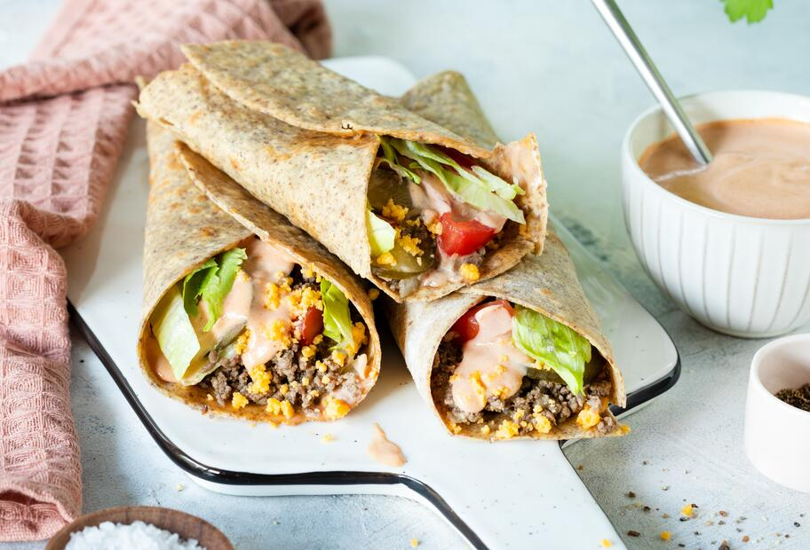

Big-Mac-Wraps

Description
The Big Mac wrap packs all the ingredients you love about the Big Mac
– the meat, cheese, special sauce, salad, and pickles –
into a soft tortilla wrap instead of a bun. This makes it a little easier to digest, but at least as delicious!
Ingredients
For the sauce:
- 1 onion
- 4 gherkins
- 2 tbsp tomato ketchup
- 2 tbsp mustard
- 4 tbsp mayonnaise
- 2 tbsp cucumber water
For the filling:
- 100 g iceberg lettuce
- 2 large tomatoes
- 1 tbsp oil
- 250 g minced meat
- Salt and pepper
- 4 tortilla wraps
- 150 g cheddar cheese
Steps
- Peel and dice the onion and chop the gherkins. Mix the ketchup, mustard, mayonnaise, cucumber water and then the onion and cucumber cubes together.
- Cut the iceberg lettuce into thin strips and the tomato into slices.
- Heat oil in a pan and fry the minced meat for about 5 minutes until it is done. Season it with salt, pepper and paprika powder.
- Top the wraps in the middle with the minced meat, sprinkle with grated cheese and place tomato slices and iceberg lettuce on top. Then pour the sauce over the filling.
- Then flap two sides, each about 3 cm wide, over the filling and roll up the tortillas as tightly as possible.
- If you want, you can heat the wraps briefly in a grill pan or in the contact grill.
Home